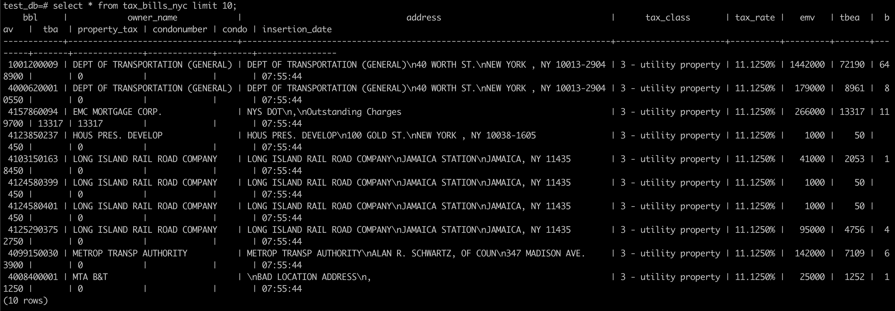

Table of Contents
1 Conda环境下搭建Clickhouse-fdw
由于 Clickhouse-fdw 依赖高版本的 GNU tool chain 需要使用 GCC 7+ 来编译， 并且依赖的一些第三方库的版本也比较高，
原生 CentOS 的 repo 不能满足依赖，所以用选用 Conda 环境来解决依赖并 build 生成动态库。
本质上 Clickhouse-fdw 是一个 postgresql 的 extension 动态库, 它与 Clickhouse 之间的连接是使用的 Clickhouse-odbc 库。
1.1 编译clickhouse-odbc
递归拉取
clichouse-odbc的source,--recursive可以把项目下的sub project一并拉下来。git clone --recursive https@github.com:ClickHouse/clickhouse-odbc.git
编译Clickhouse-odbc, README里面使用的是devtoolset-8 为了解决高版本的GCC的问题，我这里用的Conda的环境，需要用conda 安装gcc 7以及其他包括cmake 14+在内的依赖包.
cd clickhouse-odbc
mkdir build
cd build
# Configuration options for the project can be specified in the next command in a form of '-Dopt=val'
cmake -DCMAKE_BUILD_TYPE=RelWithDebInfo ..在第7部的时候会有报错，错误步骤是在编译
gtest的测试binary, 其实可以不用解决，因为在此错误之前libclickhouseodbc.so已经被编译出来了。(py3) [ec2-user@ip-172-31-46-209 driver]$ ldd libclickhouseodbc.so linux-vdso.so.1 (0x00007ffd111b4000) libpthread.so.0 => /lib64/libpthread.so.0 (0x00007f4fcd072000) libstdc++.so.6 => /home/ec2-user/miniconda3/envs/py3/lib/libstdc++.so.6 (0x00007f4fcd616000) libgcc_s.so.1 => /home/ec2-user/miniconda3/envs/py3/lib/libgcc_s.so.1 (0x00007f4fcd602000) libc.so.6 => /lib64/libc.so.6 (0x00007f4fcccc7000) librt.so.1 => /lib64/librt.so.1 (0x00007f4fccabf000) libodbcinst.so.2 => /home/ec2-user/miniconda3/envs/py3/lib/libodbcinst.so.2 (0x00007f4fcc8a4000) libicuuc.so.58 => /home/ec2-user/miniconda3/envs/py3/lib/libicuuc.so.58 (0x00007f4fcc6f1000) /lib64/ld-linux-x86-64.so.2 (0x00007f4fcd573000) libm.so.6 => /lib64/libm.so.6 (0x00007f4fcc3b1000) libdl.so.2 => /lib64/libdl.so.2 (0x00007f4fcc1ad000) libicudata.so.58 => /home/ec2-user/miniconda3/envs/py3/lib/./libicudata.so.58 (0x00007f4fca8ab000)查看是否有找不到的动态库地址。
1.2 编译clickhouse-fdw
clickhouse-fdw 依赖 postgresql-dev 的包，所以还是要先 yum postgresql-dev 相关的依赖，然后再用 Conda 安装 postgresql 11 的版本。
Conda 安装的 postgresql 没有写入 systemctl, 需要手动配置启动。
Conda 安装的 postgresql pg_config 输出的系统变量里"CC"的指向路径是有问题的。
pg_config .... CC = /tmp/build/80754af9/postgresql-split_1545233302450/_build_env/bin/x86_64-conda_cos6-linux-gnu-cc
这里 CC 是只编译 postgresql 的编译器路径，系统里根本没有这个，需要修改 Makefile 里面强制指向 CC 到系统的 gcc 编译器，否则会报错。
(py3) [ec2-user@ip-172-31-46-209 clickhousedb_fdw]$ make USE_PGXS=1 rm -rf libclickhouse-1.0.so lib/*.o make -f lib/Makefile make[1]: 进入目录“/home/ec2-user/workspaces/clickhousedb_fdw” g++ -Wall -Wpointer-arith -O2 -fPIC -O0 -g3 -Wno-unused-variable -fPIC -Wall -I. -Ilib -c -o lib/clickhouse-client.o lib/clickhouse-client.cpp g++ -Wall -Wmissing-prototypes -Wpointer-arith -Wdeclaration-after-statement -Wendif-labels -Wmissing-format-attribute -Wformat-security -fno-strict-aliasing -fwrapv -fexcess-precision=standard -Wno-format-truncation -march=nocona -mtune=haswell -ftree-vectorize -fPIC -fstack-protector-strong -fno-plt -O2 -pipe -I/home/ec2-user/miniconda3/envs/py3/include -fdebug-prefix-map==/usr/local/src/conda/- -fdebug-prefix-map==/usr/local/src/conda-prefix -fPIC lib/clickhouse-client.o -o libclickhouse-1.0.so -L/home/ec2-user/miniconda3/envs/py3/lib -L. -lclickhouse-1.0 -lodbc -lodbcinst -Wl,-O2 -Wl,--sort-common -Wl,--as-needed -Wl,-z,relro -Wl,-z,now -Wl,--disable-new-dtags -Wl,-rpath,/home/ec2-user/miniconda3/envs/py3/lib -L/home/ec2-user/miniconda3/envs/py3/lib -L/home/ec2-user/miniconda3/envs/py3/lib -Wl,--as-needed -Wl,-rpath,'/home/ec2-user/miniconda3/envs/py3/lib',--disable-new-dtags -fPIC -shared -ldl -lstdc++ -L -lodbc make[1]: 放弃循环依赖 test <- test 。 g++ -O0 -g3 -Wno-unused-variable -Iinclude lib/example/odbc_test.o -o test -ldl -L. -lclickhouse-1.0 -lodbc -lodbcinst make[1]: 离开目录“/home/ec2-user/workspaces/clickhousedb_fdw” make -f lib/Makefile make[1]: 进入目录“/home/ec2-user/workspaces/clickhousedb_fdw” make[1]: 放弃循环依赖 test <- test 。 make[1]: 对“all”无需做任何事。 make[1]: 离开目录“/home/ec2-user/workspaces/clickhousedb_fdw” /usr/bin/install -c -m 755 libclickhouse-1.0.so /home/ec2-user/miniconda3/envs/py3/lib/libclickhouse-1.0.so
最后运行 make USE_PGXS=1 install 把对应的动态库放到制定位置。
2 配置 postgresql 和 clickhousedb-fdw 连接 Clickhouse
先配置 clickhouse 表并导入数据
CREATE DATABASE test_database; |
curl -X GET 'http://taxbills.nyc/tax_bills_june15_bbls.csv' \ |
配置启动 postgresql,首先要初始化 postgresq
initdb pdatta |
这个时候会以 ec2-user 用户创建一个 pdata 的目录，里面会有生成 postsql 的默认配置。
修改 pdata 目录下的两个文件 postgresql.conf 和 pg_hba.conf ， 第一个文件修改 listernling port 和 bind ip 改为 0.0.0.0,
第二个文件修改 trust 的 ip, 这样就可以从外部访问 postgresql.
pg_ctl start -D pdata -s -w -t 300 |
如果需要停止服务可以运行
pg_ctl stop -D pdata -s -m fast |
创建 clickhouse-fdw extension
CREATE EXTENSION clickhousedb_fdw; |
创建 SERVER, 这里需要指定 clickhouse 的地址为 host, 以及之前编译的 clickhouseodbc.so 地址作为 driver 的地址, dbname 也是 clickhouse 上的 =dbname=。
CREATE SERVER clickhouse_svr FOREIGN DATA WRAPPER clickhousedb_fdw OPTIONS(dbname 'test_db', driver '/home/ec2-user/workspaces/clickhouse-odbc/build/driver/libclickhouseodbc.so', host '172.31.37.147'); |
创建user mapping
CREATE USER MAPPING FOR CURRENT_USER SERVER clickhouse_svr; |
创建外表, 并且表名需要跟 clickshouse 的表名一致。
CREATE FOREIGN TABLE tax_bills_nyc |
查询数据 
Date: 2020-08-13
Created: 2022-09-24 Sat 14:46